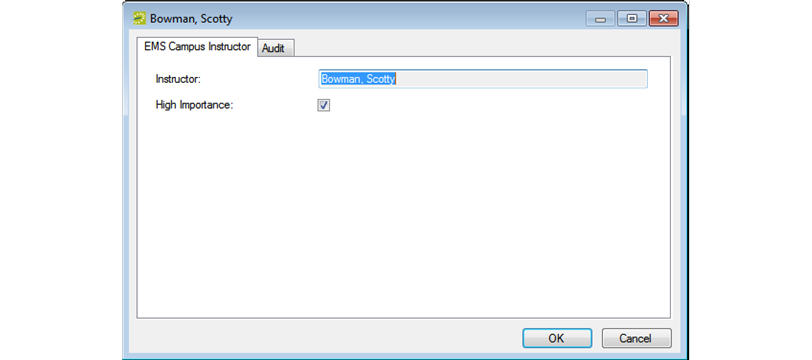

When you configure the instructors for your courses, you have the option of designating an instructor as one of High Importance.
The search string is not case-sensitive, but your search is limited to the exact order of the characters in the string and it must begin with the information for which you are searching. For example, a search string of Scott returns Scott, Todd, but not Bowman, Scott.
The optional “High Importance” designation is used during optimization. Courses that are taught by instructors with this designation have the potential to be given room preference priority.
